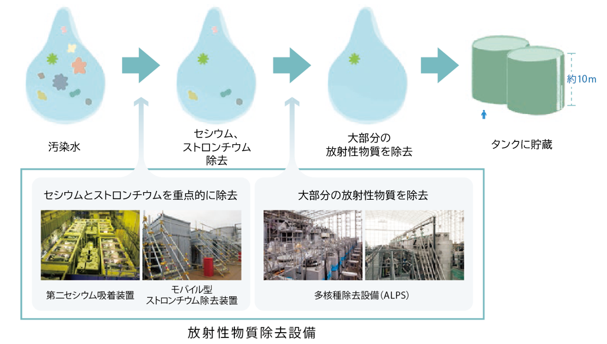

現状
海水の放射能汚染による人体への影響が懸念されています。福島第一原発事故後、海洋の放射能汚染が著しく進行しました。
原子力安全・保安院が発表したところによると、2011年3月30日には、原発法定基準の 3355倍に相当するヨウ素が検出されたといいます。
同年3月28日、ニューヨーク・タイムズ紙は、安全基準の20倍のセシウムも検出されたと報じました。
放射能の汚染によって起こされる影響について、場合によっては、食物連鎖によって生物濃縮が起こることもあると言われています。
また、海中に堆積した放射線汚染物質は微生物および化学過程を通じて上層の水中へと再び移動する場合もあります。
放射性物質は取り除くのが困難で、濾過されないトリチウムを含む水は体内に取り入れると内部被ばくのリスクがあります。
放射能は人体に悪い影響をもたらします。少量では人体の修復機能により表立つ症状は見られませんが、短期間に多量の、また少量でも長期間に連続的に摂取することで DNA が破壊され、 ガンなどの病気を引き起こす可能性があります。
これに加え政府は、東日本大震災で破壊された東京電力福島第一原子力発電所の放射性物質を含む 100 万トン以上の汚染処理水を、福島県沖の太平洋に放出する計画を承認しました。
解決策
経済産業省は、放射線で汚染された水をそのまま海洋放出するのではなく、浄化装置によって放射性物質を取り除く処理を行った水（ALPS処理水）を放出することで、海洋への影響を最小限に抑えるとしています。
しかし、現在の浄水技術ではどうしてもトリチウムが残留してしまいます。
それでも、125万トンに約15g程しか含まれておらず、放出する処理水については厳しい基準を設けています。
